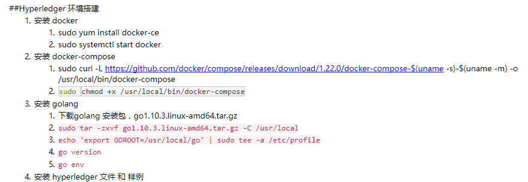

KeepassX
德龙钢铁企业文化
- 按照说的做，按照做的说
- 干一件，成一件
- 快速反应，立即就办
- 会操心、敢着急、能解决
- 会操心
- 敢着急：底线在哪儿，
- 你能忍受什么，才反应你是什么；
- 敢负责任；
- 人员都变得很象，变成事实上的一言堂，缺乏多样性；
殷洪项目
http://pd.thinkmacro.cn:5678/doc/ixd/aw-sc-mall/
http://pd.thinkmacro.cn:5678/doc/ixd/aw-sc-mall-admin/
账号：aw-sc-mall
密码：aw-sc-mall@2018
DT讲师报名表
2、自我推荐理由：
身为软件架构师，需要进一步提高自身的设计思考能力、创新思维能力。
个人长期研究软件开发相关技术，同时也不断关注创新相关的思维和方法，具备一定的英语和演讲能力，是中软讲师之一。
希望在这次培训中进一步深入了解更多相关思维技巧和解决方案。
Tips
Authentication answers the question “who are you?” while authorization answers the question “are you allowed to see that?”
股票数据接口
- 国内股票行情（免费 100次 / 天
- Tushare是一个免费、开源的python财经数据接口包。
- 聚合-股票查询 免费会员100次/天 高级会员500次/天
- 聚合-股票数据 免费会员1000次/天高级会员5000次/天
VPN 翻墙相关
zzq 云空间
我们的域名是： auto-ai.com.cn
然后跳转到 ucloud.cn
技术全部由UCloud 实现，只要测试功能能用就可以了
console.auto-ai.com.cn
unisoundtest@ucloud.cn 密码 unisoundtest？
华为云服务空间
IP: 119.3.31.11
username : simonliu
password: Chinasofti@2018/Wind13@Chinasofti
用 8088 端口 8000 到 9000 所有端口开放了。
所有可用端口：80 8080 443 22 10080 8088 45852

1 | ssh simonliu@119.3.31.11 |
将用户加入 docker 组，参考：解决 ERROR
1 | sudo gpasswd -a ${USER} docker |
William server
self server: 159.138.45.254 / williamjxj / Digital2018
1 | cd browser/server |
key:CBJCHBCAABAAoLcn4xPKBU5n0eRhyY6AXeI5Et0yBQpG
uri:https://119.3.31.11:8668/browser/rest-api-sample/api/oAuth/redirectUri
scope:agreement_send:account user_login:self
williamjxj@119.3.31.11/Digital2018
客户端 ID：
CBJCHBCAABAAoLcn4xPKBU5n0eRhyY6AXeI5Et0yBQpG
客户端密码:
IxemNmDrYR3LCplB1p-kxR_dxfuVnMh7
注意：您必须妥善保存好自己的客户密钥。
重定向 URI：
https://119.3.31.11:8668/browser/rest-api-sample/api/oAuth/redirectUri
注意：您的 OAuth 请求中指定的 redirectUri 必须属于此 URI 列表。您可以指定多个 URI 并以逗号分隔。
启用的范围
https://williamjxj.na2.echosign.com/account/accountSettingsPage#pageId::API_APPLICATIONS
jiangxiaojun@chinasofti.com
williamjxj
Benjamin001
帐户ID：CBJCHBCAABAAlU-S-8lPyCReT_z7RH_54AaSIMAvf4d1
电话：13060412448
oauth 2 protocal.
Apps
my app:CBJCHBCAABAAoLcn4xPKBU5n0eRhyY6AXeI5Et0yBQpG/IxemNmDrYR3LCplB1p-kxR_dxfuVnMh7
demo1:CBJCHBCAABAATf-JatMN2d4T-oifQxQ_XHrlEui1QaTd/lM4kJ7BTzoxqbLFjPiOAlkTRJA6sY94J
另一个 IP: 122.112.212.18
内部 GitLab simon/liujshwind13
公司可用Wifi：
Digital_Regional:Duigongqudao
TP-LINK_5G_A7D2:hsbchase
TP-LINK_A7D2:hsbchase
PT_TP:htjmt13579
硬件升级思路
- 换小米笔记本，卖苹果笔记本
- 8999元，配置升级，游戏通吃，存储、性能（i7-7700HQ的CPU 2.8 GHz 四核八线程，GeForce GTX1060 6GB显存，16G内存，256G+1TB硬盘，15寸 1920*1080）都大幅提升。
- 苹果笔记本（2.4 GHz Intel Core i5，8G内存，256G硬盘，13寸）可卖4000元，补 5000 元。如不追求顶配，可考虑 5999元 的 i5 8G内存 256G+1T 的版本，这样只需补 2000元即可。
- 使用体验考虑：
- 系统从 macOS 切换为 Windows 家庭版 + Office家庭和学生版2016，体验会下降吗？
- 目前常用软件：vscode, chrome, iterm，基本 windows 上体验一样，唯一 iterm 缺失，可考虑其他替代，编程体验变化应该不大。
- 游戏体验不用说，肯定会大幅提升。
- 办公体验也会有所提升，因为 Office 套件家庭正版，基础的应该够用，且易于跟市场接轨。
- 与家里的 PC 机同系统，更易于同步使用。
- 实在想用苹果系统，也可以参考安装黑苹果系统：
- 性能应该是更快了，存储空间也更大了。
- 苹果笔记本也可以考虑让小宝学习编程使用。
- 设备更集中，占空间小，屏幕15寸也有所增大，与家中 PC 更好地协同，可借用外接显示器实现工作室功能等。
- 系统从 macOS 切换为 Windows 家庭版 + Office家庭和学生版2016，体验会下降吗？
- 更换新手机
- 性价比来说，小米 Max 3 比较好，但配置与目前手机 小米5s plus 比较接近，所以考虑等待小米 Max 4 或 5 的发布。
- 另外一个选择就是游戏手机。
- 还有就是小米 Mix 2S 全面屏，显得高大上，但也许用两天也就那样了。
创新想法：
- 软件培训机构，针对各软件公司人才需求，视频教学，高起点低收费。
- 软件工程管理思想总结。
- 公司运营管理咨询教练。
- 新技术论坛。
- Clojure 函数式编程 技术沙龙。
- 汇丰业务线/恒生业务线业务架构总结。
有趣的工具：
- Tampermonkey®，可以在网页上添加自定义的脚本实现特殊功能。
- Greasy Fork 一个提供用户脚本的网站。
- OpenUserJS 用户脚本网站，国外。
有用的文档：
有用的技巧：
- 换 taobao 源
1 | yarn config set phantomjs_cdnurl https://npm.taobao.org/mirrors/phantomjs/ |
本机 docker MongoDB 用户：root/rootadmin, admin/rootadmin
1 | { |
1 | 3a5g2t98237e6s84q980b73c |
Got this issue when use Robo 3T
Blog token: blog-editer
e089d25c73dbee8e5786118e5cb33e9b1ab45c95技术公司招聘需要考核面试者，需要相应的考题和结论，这是一个可以做的事，但是一件很难的事。
爱情守望者 致力于分享最精彩的Mac软件
创新思维
推荐书目：《你能看见大猩猩吗？》通过提升大脑注意到原本没注意到的事物（大猩猩），改善和增强创新能力。
把想解决的问题记在脑里，然后就可以在其他时间不经意间找到解决的思路。
做好准备，机会就会到来。 ——林肯，美国总统
不把问题完全抛诸脑后，也不把注意力都集中在问题上，你要做的就是寻找两者间的平衡点。
历史不断地证明，有了准备不一定有所发现，但是没有准备是一定不会有所发现的。
如果你始终按照相同的方式做事，你的成果也将是始终不变的。
少一点按部就班，就多一些趣味。
想要唤醒大脑，需要不断地用新鲜有趣的事物刺激你的大脑，让大脑保持对事物反应的灵敏性，对于常规程序变换方式去看，就如同一每一分每一秒都是新鲜的一样。
小契机往往是大成就的开端。
寻找新观点，大脑要保持预备状态，睁大双眼，认真地保持轻松有趣，全然清醒并充满好奇。
本书相关名言
- 世界上最难做到的事情就是看清眼前的事物。 —— 歌德
- 人们只看到自己想要看到的东西。 —— 爱默生
- 天才之所以成为天才，只是因为他们能够从不同的角度感知事物。 —— 威廉·詹姆斯
- 若没有机会，即使有能力也是枉然。 —— 拿破仑
- 所谓机智就是使那些看似无关的想法快速结合。 —— 马克·吐温
- 事物最重要的层面，往往就是因为简单并且熟悉，就被我们忽视了。 —— 维特根斯坦
公积金提取办理
- 身份证
- 借款合同
- 最近一期还款证明 - 在招行城东支行打印
- 去网点办理提取
- 带身份证、贷款银行卡（3593卡）到贷款银行打印还款证明。 招商银行和平路支行二楼办理。
- 带身份证、借款合同、还款证明和绑定银行卡（3593卡）就近去公积金网点办理提取。 高新区办理网点地图
- 最佳选择是尽早（下午 4 点半公积金提取停止办理，因此最好下午两点前出发）去大差市一趟办完，先在招商银行和平路支行二楼打印还款证明，再在旁边的建设银行办公积金提取；
- 如果时间不合适，可以另选时间从公司出发，坐 526 路（次选 高新 8 号线）到丈八四路口站下车去华夏银行锦业路支行办理。
Hexo 使用技巧
遇到类似 unexpected token: : 的问题，参考： https://segmentfault.com/a/1190000011042242
多半是因为代码块中放入了 \{\{}} ，而在括号里面又有其他内容，导致被解析而报错。
FaunaDB cloud keys
- 云数据库管理台
- cscwfree:
fnACwKqEjAACAnbvTFVrh_VIBF_qy22nzdo3oQbq - auth-user-client-key:
fnACyQ_NYRACCjFXB43rlagyM0IuU7zeq3za57au - auth-user-server-key:
fnACyRAfSRACCRRBWczvDe3UJFY_J4gIWi58vi_S
Token
- gitlab ocr-web-client deploy token:
- gitlab+deploy-token-916: u9wBDxnC2JYihasfy1CM
GoodRain keys
ssh-rsa AAAAB3NzaC1yc2EAAAADAQABAAABAQCy97mlKJo1xPoDYejmeK0bMhM6O/leVuLF/U0ry/NLWatfkl1R69NIX6TpW/hVFjGXRZTz56V37jLOVQWq24dQaLIXyFqxZwJnakZzX/b6K3sKb6Y+dDZdktcPEVLUQPWHs6gm0tUgbvgywulEVuTgAt5fYwa1rG48zmgCHlU4a6jWT8iQ9D2Lqpf4ZYZnUOOGB6AmaABfCBSCFDj8ihIz00Hp77s42gxRhn/iQJE9ZrDYWnxN0cUAxvLpB1jCANFR4Zc5FslHUp4tLVNMdDeqi8OPZMj4G6yWclwa3Uqfu7yd3gqik4nI1jaRLL9Lq/2GgA20MvCFWqtvcBJ2Tcv1 builder
regx
在紧挨着的中英文字符中间插入空格
- 查找：
([^\x00-\xff])\b([\w\.]+)\b([^\x00-\xff]) - 替换：
$1 $2 $3
说明：其中 `[^\x00-\xff] 匹配双字节字符(包括汉字在内)
HR + RM
- Moka，智能化的招聘CRM 选择 Moka，让团队每一位成员都能高效的参与到招聘流程中。从今天起，告别混乱的招聘管理，拥抱全新的工作方式。 （预约产品演示、企业付费）
- 石墨文档
- Worktile
云空间购买
- 阿里云服务器 ECS 共享基本型 一年 约 800 元，建议初期买 两到三个，共2400元。
- 后期如果有需求再添加。
Weekly meeting
HMBP 问题：
- 每天的招聘需求 Open demand 关不了。
- 招聘没有 RR(Resource Replacement)，标准的流程逻辑是什么？紧急流程又是什么？
- 与客户？分块对，但与 RR 分块不一样？
- 真正的依据是什么？客户的需求落实到什么情况时就确定了？
- 客户会变换 Skill level 对应的 RR，容易乱。
- 需要一个全局的工作现状：
- 对招聘需求；
- Open 几个，状态是什么？如 Offering, Onboarding, Onboard(发了 RDD), Deboard(出场、辞退) 等，要在谁那儿更新同步。
- 职位要求：什么技能，什么级别，什么城市；
- 电话联系不上客户，发邮件客户也不回；
- 两天之内安排二面，否则其他项目要同时推荐；
- Long agent 是多长？超过30天；要特殊处理。
- 每周总结后，发 HR 群里。
- 对招聘需求；
- 需要各个岗位的科普知识介绍。
- 客户想辞退只是口头说不能推人，要见到邮件才算数。
- 与面试官的约时间：
- 初次约时间；
- 最后修改时间确认；（要够更换面试官的时间）
- 面试前提醒时间；（要够面试官准备）
- 不可能让 HR 帮你平衡资源；
- 应聘人员要手工转推给某人，而不是共享？
- 所有 GSI 开票，要更新状态，要催客户 PMO 走流程、改状态。 VSU 仲裁机构要审核后，才能开票。 定时发邮件列表给客户 AnJii 来操作。
- 跟客户对项目；
- 与员工 one one meeting 了解现状；
- 与客户对接的 RM 固定？
- 与面试官认识、对接等；
- 结项的过程和方法；
解决思路：
- 同步的文档，只有一份，所有人去一个地方看，所有人在一个地方修改；
- 书写标准的流程文档等；
男人一辈子的工具之二 —— 博世电动螺丝刀
http://piebbs.pconline.com.cn/topic-5363.html
男人一辈子的工具之三 —— 终极暴力百得冲击钻
http://piebbs.pconline.com.cn/topic-8228.html
男人一辈子的工具之四 —— 电锯惊魂
http://piebbs.pconline.com.cn/topic-9790.html
男人一辈子的工具之五 —— 博世电动锄草打边机
http://piebbs.pconline.com.cn/topic-11772.html
男人一辈子的工具之六 —— 瑞士军刀冠军三剑客
http://piebbs.pconline.com.cn/topic-14612.html
男人一辈子的工具之七 —— 钥匙链上的随身小工具 标红多魔
http://piebbs.pconline.com.cn/topic-14696.html
男人一辈子的工具之八 —— 钱包里的工具百宝箱 瑞士卡
http://piebbs.pconline.com.cn/topic-14816.html
男人一辈子的工具之九 —— 双立人厨刀五件套开箱
http://piebbs.pconline.com.cn/topic-15167.html